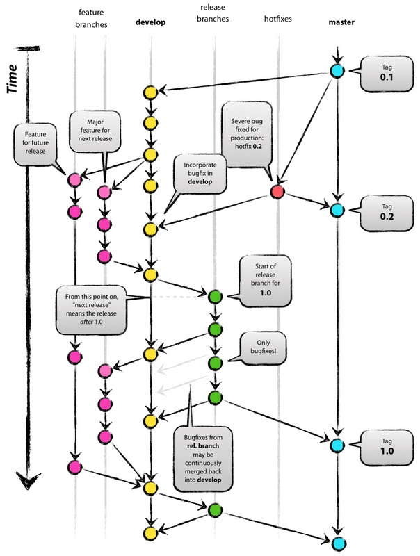

Git工作流
文章目录
GitFlow
基本介绍
Gitflow 提倡使用 feature branches 模式来开发各个相互独立的功能，同时分成不同的分支以便进行集成和发布

分支介绍
长期分支
主分支(master)
开发分支(develop)
在gitflow下,
develop分支是一个类似全能的分支，用来存放、测试所有的代码，同时也是主要是用来合并代码、集成功能的分支作为一个开发人员，在这是不允许直接提交代码到
develop分支上的，更更更不允许直接提交到master分支。master分支代表的是一个「stable」的分支，包含的是已投产或即将投产的代码。如果一段代码在master分支上，即代表它已经投产或即将投产发布短期分支
功能分支(feature)
热补丁分支(hotfix)
预发分支(release)
feature功能性分支从
develop分支上产生， 根据新需求来新建feature分支， 开发完成后，要再并入develop分支， 合并完分支后一般会删除这个feature分支在
feature分支的命名规则上，可以约定以 「feat-」开头，后面跟上问题单编号。如「feat-APS-151-add-name-field」。以「feat-」开头，可以让 CI 服务器识别出这是一个feature分支，「APS-151」是Jira 问题单的编号，可以链接到问题单，剩下的部分则是对该功能的简短的说明releaserelease分支基于develop创建打完
release分支之后，我们可以在这个release分支上测试，修改bug等。同时，其它开发人员可以基于develop分支新建feature(记住：一旦打了release分支之后不要从develop分支上合并新的改动到release分支)发布release分支时，合并release到master和develop， 同时在master分支上打个tag记住release版本号，然后可以删除release分支了。它的命名，可以采用release-*的形式在测试中，难免发现 bug，我们可以直接在 release 分支上修改，修改完后再 merge 到 develop 分支上（develop 分支包含的是已发布或者即将发布的代码）
hotfix这个分支是负责在生产环境上发现的问题，如 bug 或者性能问题等。 hotfixes 分支和 release 分支类似，都以 release 版本号命名，唯一的区别就是 hotfixes 是新建于 master 分支，release 分支则是从 develop 分支而来，修补结束以后，再合并进Master和Develop分支。它的命名，可以采用hotfix-*的形式
文章作者 huangkai
上次更新 2019-10-12